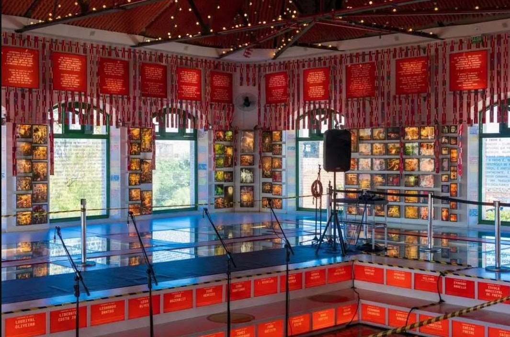

Pontos turísticos em Recife - PE
Paço do Frevo
O Paço do Frevo é um museu dedicado ao ritmo musical e dança que surgiu em Pernambuco há mais de 100 anos. A construção é mais recente e fica localizada no bairro do Recife, também conhecido como Recife Antigo. O museu ocupa um prédio histórico no bairro do Recife Antigo e conta com exposições interativas, oficinas, shows e um acervo de mais de 12 mil itens relacionados ao frevo É uma opção de onde passear em Recife e uma oportunidade para conhecer mais sobre essa expressão cultural pernambucana que é Patrimônio Imaterial da Humanidade.
Rua do Bom Jesus
A Rua do Bom Jesus é uma das mais antigas e charmosas de Recife, no bairro do Recife também, com casarões coloridos que datam do século XVII. Foi considerada a 3ª rua mais bonita do mundo pelo Architectural Digest.
Fonte: CNN Brasil